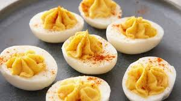

Stuffed Egg

Description
Stuffed eggs, also known as deviled eggs, are a classic and versatile appetizer that features hard-boiled eggs with their yolks mixed with flavorful ingredients and then piped back into the egg whites. The filling often includes ingredients like mayonnaise, mustard, relish, and spices, creating a creamy, tangy, and slightly savory taste. They can be garnished with paprika, chives, or bacon bits to add extra flavor and visual appeal.
ingredients
- Hard-boiled eggs
- Mayonnaise
Preparation:
- Boil Eggs: Start by boiling eggs until they are fully cooked. Let them cool before peeling.
- Prepare Filling: Cut the eggs in half lengthwise and remove the yolks. Mash the yolks and mix them with mayonnaise, mustard, and relish until smooth and well-combined.
- Season and Fill: Season the mixture with salt and pepper to taste. Pipe or spoon the yolk mixture back into the egg white halves.
- Garnish: Sprinkle with paprika and add any additional garnishes as desired.